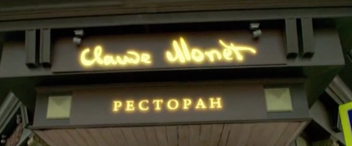

Добро пожаловать в ресторан "Клод Моне"!
Мы приглашаем вас на уникальное гастрономическое путешествие, вдохновленное великим французским художником
Клодом Моне.
В каждом элементе нашего ресторана вы найдете отражение его творческого гения и великолепия. Отпустите свои
чувства на волю, наслаждаясь не только изысканными блюдами, но и восхитительной атмосферой, которая
перенесет вас в мир красок и впечатлений Моне.
Наши повара с любовью готовят каждое блюдо, чтобы создать для вас настоящее произведение искусства на
тарелке.
Давайте вместе погрузимся в уникальное сочетание вкуса и визуального восприятия, создавая воспоминания,
которые будут долго с вами.
Ресторан "Клод Моне" — это не просто место, где можно поесть, это место, где можно ощутить
волшебство искусства в каждом кулинарном изыске.
Ожидаем вас в нашем ресторане, чтобы подарить вам незабываемый опыт, насыщенный вкусом, стилем и
вдохновением. Добро пожаловать в мир "Клод Моне"!
У нас каждый визит превращается в увлекательное путешествие в мир красок и форм, созданных великим Моне. Атмосфера ресторана погружает гостей в уникальный опыт, где искусство встречается с гастрономией.
Под руководством талантливого Шеф-повара Виктора Петровича Баринова наше меню превращается в настоящую симфонию вкусов. Каждое блюдо — это произведение искусства, приготовленное с любовью и вниманием к деталям.
Наше меню сочетает в себе классические традиции французской кулинарии с инновационными идеями, создавая уникальные и восхитительные блюда. От изысканных закусок до утонченных десертов — каждый прием пищи становится неповторимым событием.
В "Клод Моне" мы верим, что еда должна радовать глаз не менее, чем вкусовые рецепторы. Именно поэтому каждая подача, каждая деталь блюда — это настоящий художественный акт, дополняющий гастрономическое великолепие.
Наш профессиональный персонал предан созданию для вас незабываемого опыта. Заботливый сервис и внимание к деталям делают каждое посещение особенным и уютным.
"Клод Моне" — это не просто ресторан, это исключительный опыт, где встречаются великое искусство и высокая кулинария. Приглашаем вас на удивительное путешествие в мир вкуса и красоты. Добро пожаловать в лучший ресторан Москвы — "Клод Моне".